Aroid Mix Premium: 8 ingredientes naturales en la proporción exacta
para raíces sanas, follaje exuberante y plantas que hacen la diferencia.
No se trata solo de llenar una maceta. El sustrato es el ambiente donde las raíces viven, respiran y se desarrollan.
Elegir el correcto puede marcar la diferencia entre una planta que sobrevive y una que prospera.
Las raíces no tienen espacio para crecer.
El exceso de agua puede provocar pudrición.
Las raíces se ahogan y la planta se debilita.
La planta no recibe lo que necesita para desarrollarse.
Aroid Mix Premium, la fórmula exclusiva de Entre Verde, es una mezcla balanceada de 8 componentes naturales de alta calidad, seleccionados específicamente para replicar el hábitat natural de las aráceas y otras plantas de interior exigentes.
Cada género tiene necesidades propias de drenaje, humedad y aireación. Por eso Aroid Mix Premium está pensado específicamente para las aráceas más buscadas en plantas de interior.
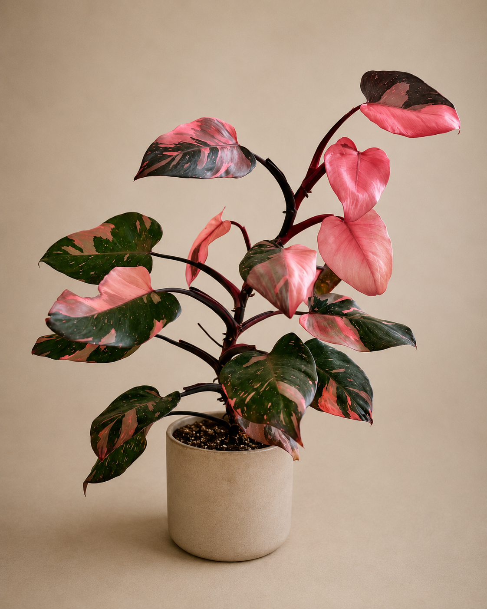
Trepadoras que agradecen aireación y drenaje rápido.
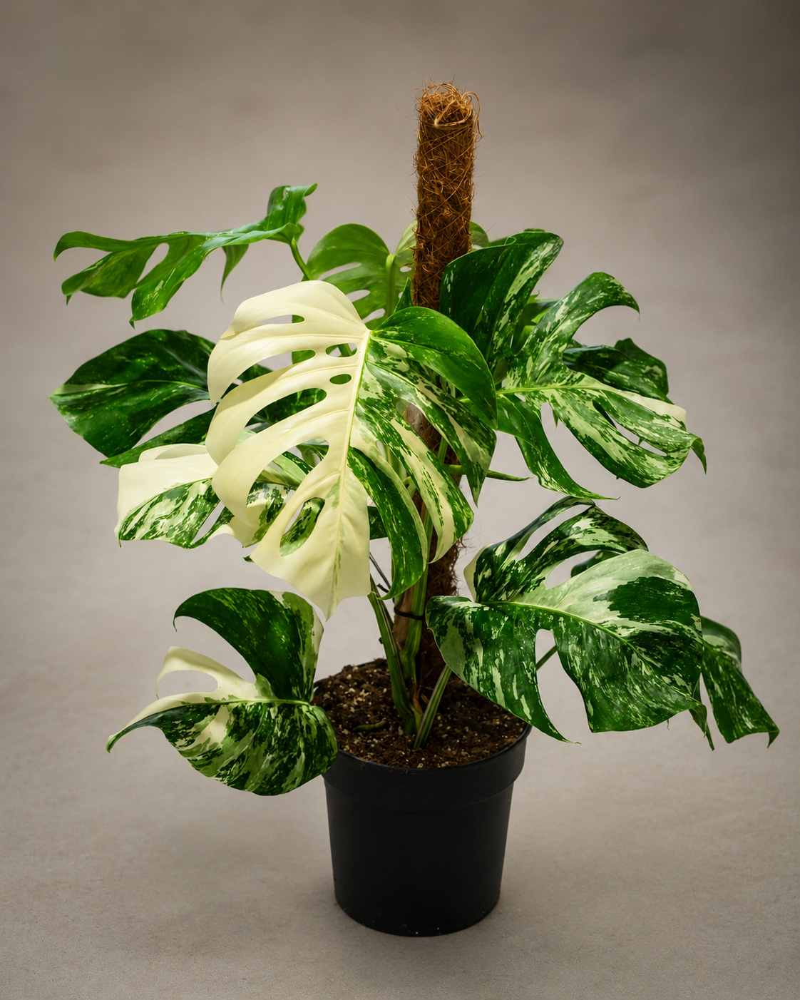
Raíces gruesas que necesitan oxígeno constante.
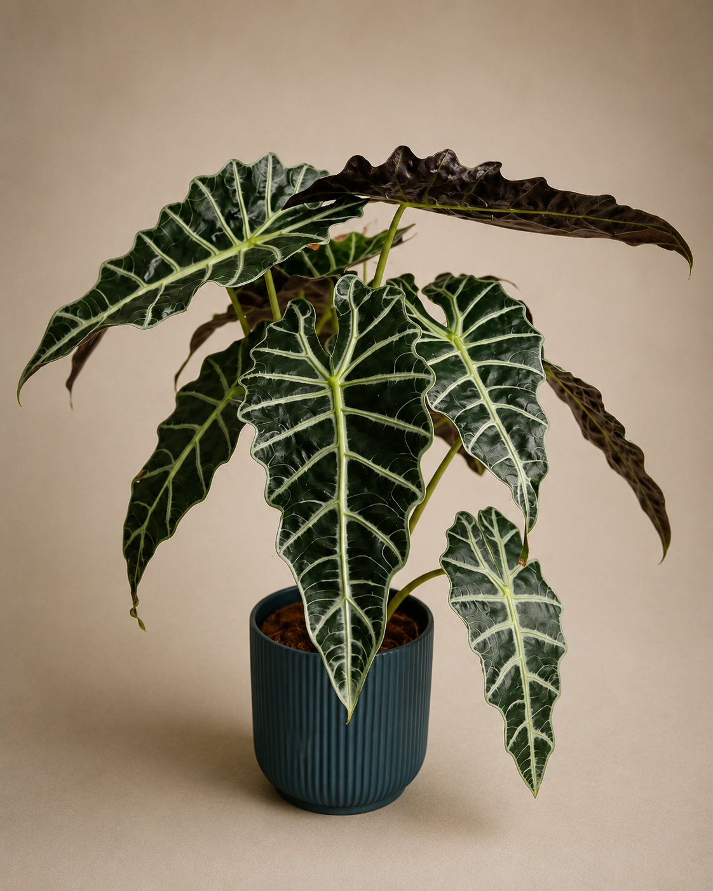
Exigente con la humedad, sin encharcar.
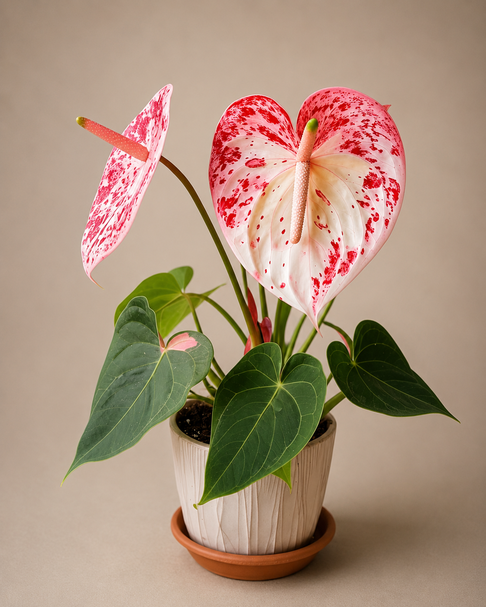
Raíces sensibles al exceso de riego.
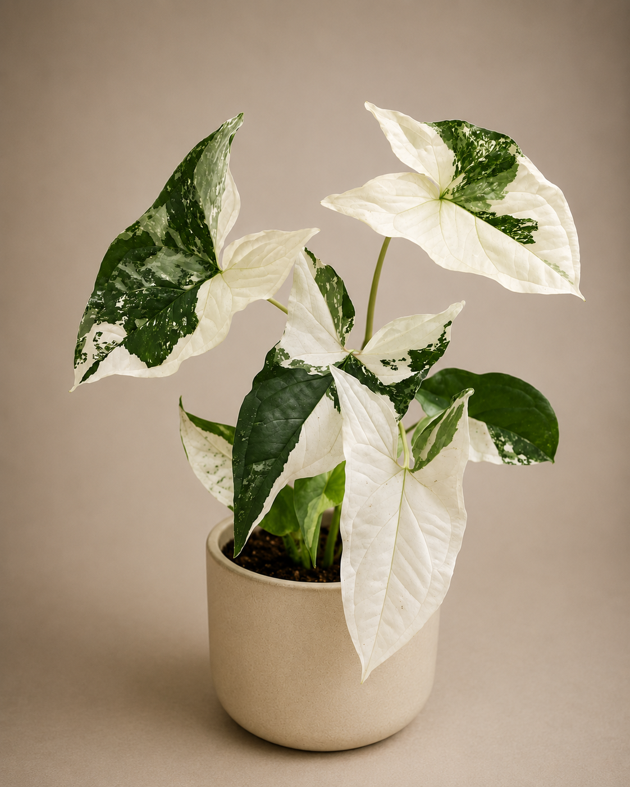
Crecimiento rápido con nutrientes equilibrados.
No hay nada de relleno. Cada ingrediente fue seleccionado por su función precisa dentro de la mezcla: juntos crean el equilibrio exacto de drenaje, aireación y humedad que las aráceas necesitan para desarrollar raíces fuertes y un follaje que se destaca.
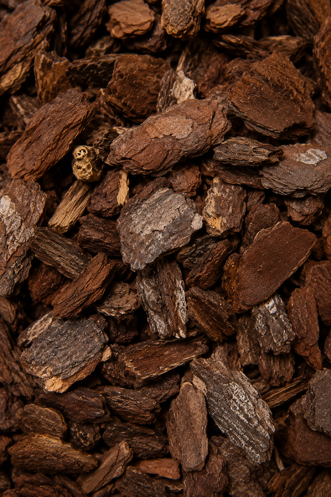
01Estructura porosa que replica el suelo selvático y garantiza aireación radical.
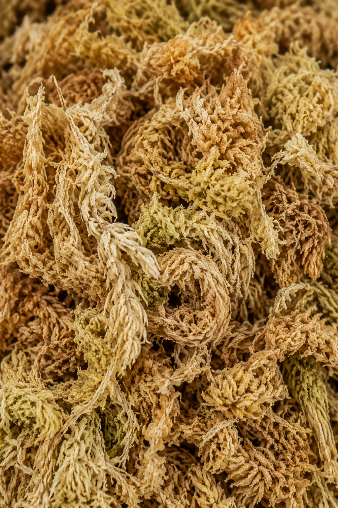
02Retiene hasta 20 veces su peso en agua sin encharcar ni asfixiar las raíces.
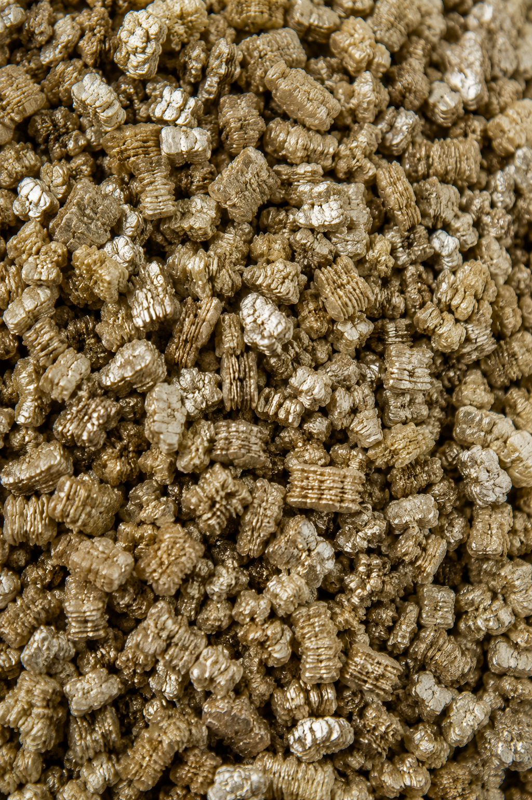
03Regula temperatura del sustrato y libera minerales de forma gradual y constante.
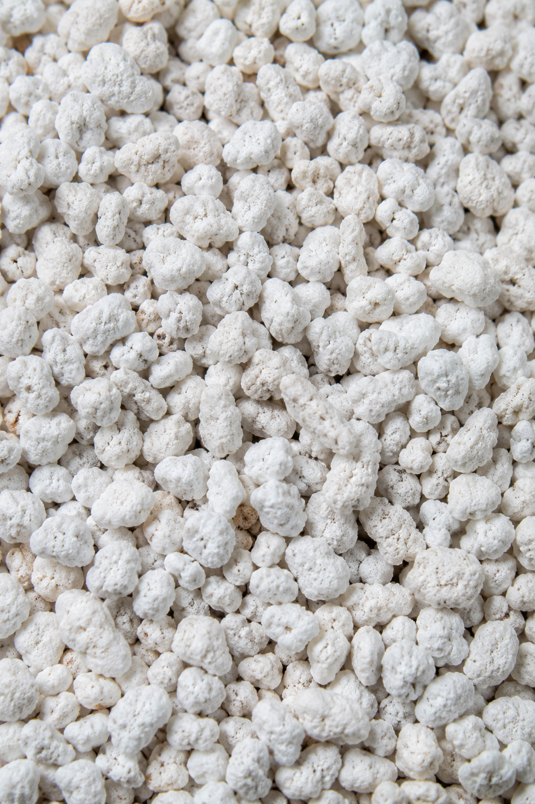
04Garantiza drenaje inmediato y oxigenación máxima para raíces que respiran.
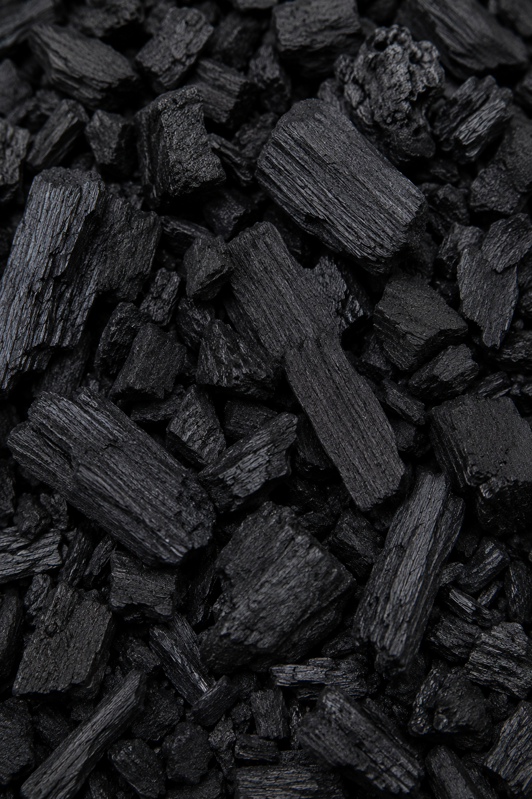
05Purifica el sustrato, previene hongos y mantiene el ambiente radical sano.
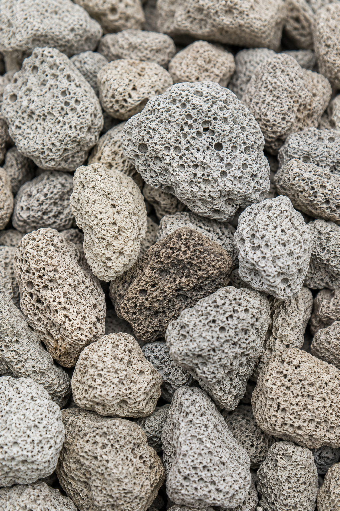
06Evita la compactación a largo plazo y mantiene la mezcla siempre abierta.
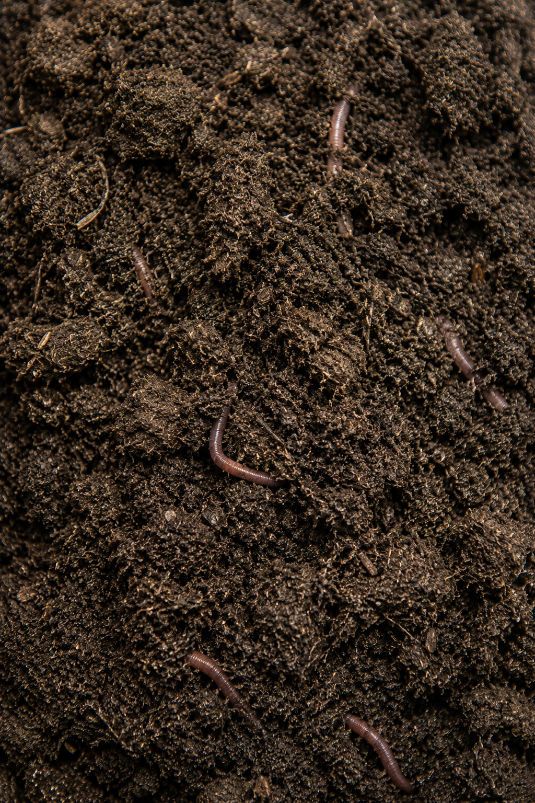
07Fertilidad orgánica de liberación lenta que nutre sin quemar las raíces.
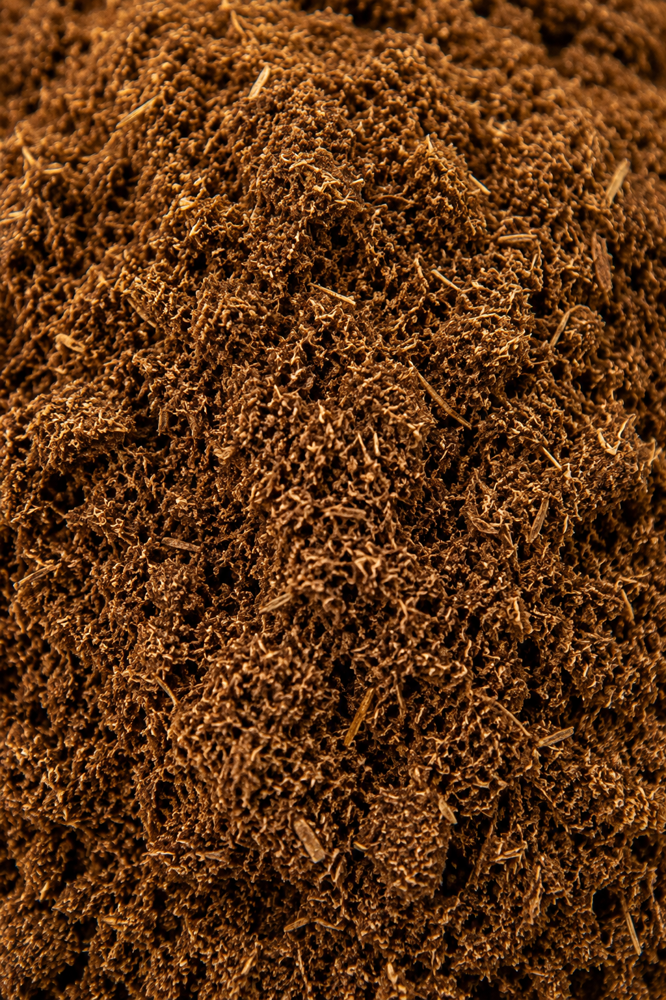
08Ajusta el pH a 5.5–6.5, el rango ideal para que las aráceas absorban nutrientes.
Aroid Mix Premium está formulado específicamente para aráceas —Philodendron, Monstera, Alocasia, Anthurium y Syngonium— y otras plantas de interior exigentes. Su mezcla de 8 componentes replica las condiciones de drenaje, aireación y humedad de su hábitat natural.
Con un mantenimiento adecuado, Aroid Mix Premium mantiene sus propiedades por más de 12 meses, lo que lo hace una inversión duradera para el desarrollo de tus plantas.
Aroid Mix Premium ya contiene nutrientes naturales esenciales. Para plantas muy exigentes o en período de crecimiento activo, se puede complementar con fertilización específica.
La mayoría de los sustratos son mezclas genéricas que no diferencian entre un cactus y una Monstera. Aroid Mix Premium fue diseñado desde cero para aráceas y plantas de interior exigentes.
La diferencia está en la estructura: nuestra fórmula de 8 componentes no se compacta con el uso. Un sustrato compacto bloquea el oxígeno y daña las raíces; el nuestro las mantiene libres para respirar y crecer. A eso sumale drenaje superior y un pH calibrado específicamente para aráceas, y tenés un ambiente donde las plantas no solo sobreviven — prosperan.
Es simple: completás el formulario al final de esta página, te contactamos con toda la información, y evaluamos juntos si es la oportunidad correcta para tu negocio.
Lleválo a tu vivero, tienda o distribución. Un producto innovador, de alta calidad y con una comunidad que no para de crecer.
Completá el formulario y te contactamos con toda la información.
Quiero distribuir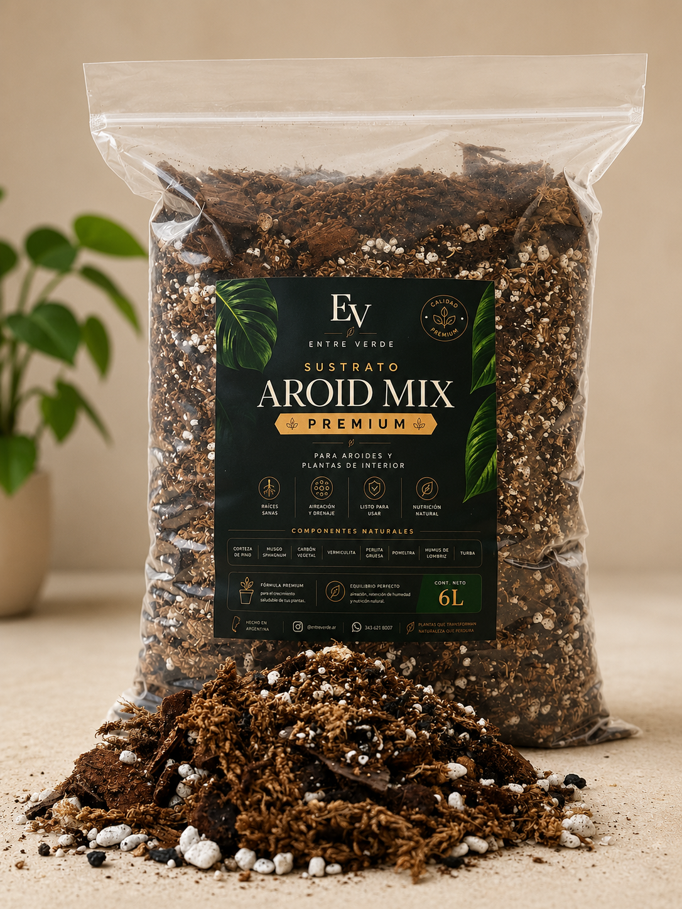
Te respondemos en menos de 24 horas.